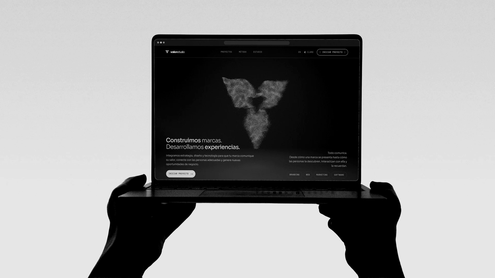
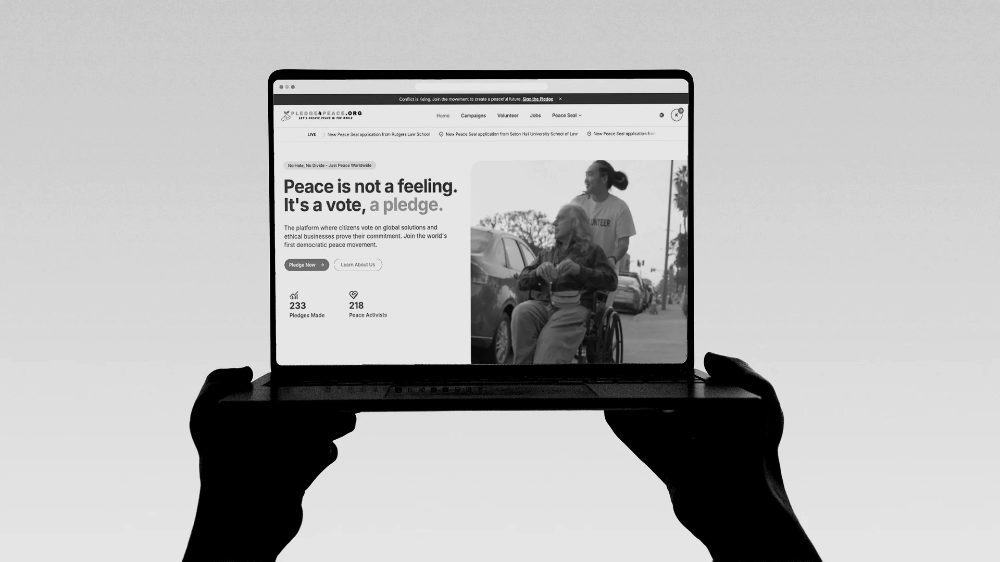
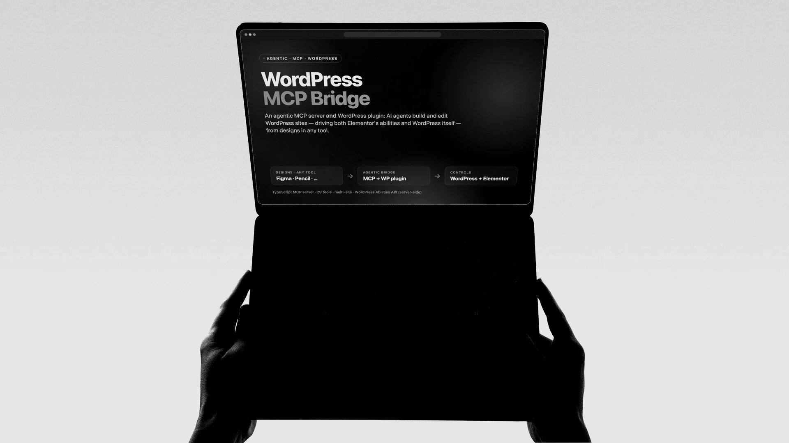

Kayro Valero
Portfolio
From the data model
to the deploy.
Experience
5+ years
Builds
Web and mobile
Co-founder of
Valion Studio
( 01 ) Selected work
2024–2026

Valion Studio

Pledge4Peace

WordPress MCP Bridge
( 02 ) Stack
TypeScript, front to back.
01
Interface
React · Next.js · Astro · React Native · Tailwind
02
Server
Node.js · Hono · Express · Drizzle · Better Auth
03
Data and edge
Cloudflare Workers · D1 · R2 · PostgreSQL
04
Content
Sanity · Emdash · WordPress · WooCommerce · Webflow
05
Tooling
Turborepo · MCP · Claude Code · Codex
( 03 ) Contact
Let's talk.
kayro@valionstudio.com
Based in Panamá
© 2026
LinkedIn
Portfolio